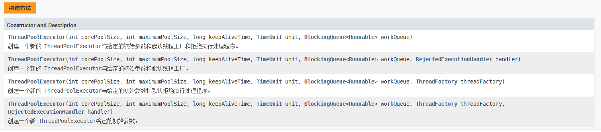

<h2>{{ page.title }}</h2>
<b>Collection</b>
<ul>
    <li>List和Set都是Collection的子接口。（其余还有Queue，Deque等）</li>
    <li>List是有序的，而Set是无序的。</li>
    <li>Set中每个元素只可出现一次。</li>
    <li>Map没有继承Collection，Map中的key是不重复的。</li>
</ul>
<b>ArrayList、LinkedList、Vector</b>
<ul>
    <li>实现和继承不同：在实现Serializable、Cloneable、List接口的基础上ArrayList又实现了RadomAccess（支持随机访问）和Iterable继承了AbstractList，而LinkedList实现了Deque（双端队列）继承了AbstractSequentialList
    </li>
    <li>ArrayList的初始化默认大小为10扩容方式为1.5*old，LinkedList无默认大小和扩容机制。</li>
    <li>ArrayList的底层数据结构为Object数组，二LinkedList则为双向链表。(JDK1.6之前为双向循环链表)</li>
    <li>ArrayList支持快速的随机访问。（实现RadomAccess的原因）</li>
    <li>ArrayList插入和删除受元素位置的影响（O(n)）,而LinkedList（O(1)）则不受影响。</li>
    <li>ArrayList的空间浪费主要体现在在list列表的结尾会预留一定的容量空间，而LinkedList的空间花费则体现在它的每一个元素都需要消耗比ArrayList更多的空间（因为要存放直接后继和直接前驱以及数据）</li>
    <li>ArrayList和LinkedList都是线程不安全的。</li>
    <li>Vector类的所有方法都是同步的。可以由两个线程安全地访问一个Vector对象、但是一个线程访问Vector的话代码要在同步操作上耗费大量的时间。</li>
</ul>
<b>HashMap、Hashtable、ConcurrentHashMap、HashSet</b>
<ul>
    <li>Hashtable是同步的，HashMap不同步。</li>
    <li>HashMap的K，V可以为null，而Hashtable不能为null。（V也不可以）</li>
    <li>HashMap初始默认大小为16，扩展因子为0.75，扩展大小为2的幂次方。Hashtable初始化默认大小为11，扩展因子为0.75，扩容大小为old*2+1。（2的指数在计算桶下标时&其-1就可得，所以使用2的指数）
    </li>
    <li>Hashtable直接使用对象的hashCode，HashMap需要重新计算hash值。</li>
    <li>HashMap采用拉链法解决hash冲突。所谓 “拉链法” 就是：将链表和数组相结合。也就是说创建一个链表数组，数组中每一格就是一个链表。若遇到哈希冲突，则将冲突的值加到链表中即可。</li>
    <li>HashMap当每个链表长度大于等于8时会变为红黑树加快搜索。</li>
    <li>Hashtable采用的Synchronized进行加锁，效率低。</li>
    <li>ConcurrentHashMap采用的是分段锁：对整个桶数组进行了分割分段(Segment)，每一把锁只锁容器其中一部分数据（JDK1.7）。1.8
        之后直接用Node数组+链表+红黑树的数据结构来实现，并发控制使用 synchronized 和 CAS 来操作（Node为数组成员每次锁都是桶下标相同的）。
    </li>
    <li>取余(%)操作中如果除数是2的幂次则等价于与其除数减一的与(&)操作（也就是说hash%length==hash&(length-1)的前提是length是2的n次方；）。
        并且采用二进制位操作&，相对于%能够提高运算效率，这就解释了HashMap的长度为什么是2的幂次方。
    </li>
    <li>HashSet底层就是基于HashMap实现的因为除了clone()、writeObject()、readObject()是HashSet自己不得不实现之外，其他方法都是直接调用HashMap中的方法。</li>
    <li>当你把对象加入HashSet时，HashSet会先计算对象的hashcode值来判断对象加入的位置，同时也会与其他加入的对象的hashcode值作比较，如果没有相符的hashcode，HashSet会假设对象没有重复出现。但是如果发现有相同hashcode值的对象，这时会调用equals（）方法来检查hashcode相等的对象是否真的相同。如果两者相同，HashSet就不会让加入操作成功。
    </li>
</ul>
<b>Comparable、Comparator</b>
<ul>
    <li>Comparable出自java.lang包,它有一个compareTo(Object obj)方法用来排序。</li>
    <li>Comparator出自java.util包，它有一个compare(Object obj1, Object obj2)方法用来排序。</li>
</ul>
<b>线程</b>
<ul>
    <li>实现线程的方法：继承Thread重写run（），实现Runnable接口重写run（），实现Callable接口重写call（），使用线程池（推荐使用ThreadPoolExecutor）</li>
    <li>接口的实现类要new Thread（）才可以跑起来。</li>
    <li>重写Runnable接口的run（）方法不可以有返回值也不可以抛出异常，Callable的call（）方法可以</li>
</ul>
<b>synchronized和ReentrantLock</b>
<ul>
    <li>synchronized是关键字，ReentranLock则是java.util.concurrent.locks下的类。</li>
    <li>两者都是可重入锁。“可重入锁”概念是：自己可以再次获取自己的内部锁。</li>
    <li>synchronized主要依赖于jvm，ReentrantLock依赖于API。JDK1.6 为
        synchronized关键字进行了很多优化，但是这些优化都是在虚拟机层面实现的，并没有直接暴露给我们。ReentrantLock是JDK层面实现的（也就是API层面，需要
        lock()和unlock()方法配合try/finally语句块来完成）</li>
    <li>ReentrantLock比synchronized增加了一些高级功能:等待可中断(正在等待的线程可以选择放弃等待，改为处理其他事情)；可实现公平锁(公平锁就是先等待的线程先获得锁)；可实现选择性通知（锁可以绑定多个条件用ReentrantLock类结合Condition实例可以实现）
    </li>
    <li>性能已经不是两者的选择标准。</li>
</ul>
<b>synchronized</b>
<ul>
    <li>可修饰实例方法，静态方法，代码块。</li>
    <li>修饰代码块Class文件中使用monitorenter和monitorexit指令。修饰方法会在flags中加入ACC_SYNCHRONIZED标识。</li>
    <li>DK1.6
        对锁的实现引入了大量的优化，如偏向锁、轻量级锁、自旋锁、适应性自旋锁、锁消除、锁粗化等技术来减少锁操作的开销。锁主要存在四种状态，依次是：无锁状态、偏向锁状态、轻量级锁状态、重量级锁状态，他们会随着竞争的激烈而逐渐升级。注意锁可以升级不可降级，这种策略是为了提高获得锁和释放锁的效率。
    </li>
</ul>
<b>volatile</b>
<ul>
    <li>volatile关键字的主要作用就是保证变量的可见性,不能保证原子性，synchronized可以保证。</li>
    <li>volatile关键字是线程同步的轻量级实现,性能好，多线程时不会发生阻塞。</li>
    <li>volatile会将变量放入主内存，保证其他线程每次读取都是最新值。（内存模型略）</li>
</ul>
<b>ThreaadLoacl</b>
<ul>
    <li>ThreadLoacl实现每一个线程都有自己的专属本地变量,让每个线程绑定自己的值，可以将ThreadLocal类形象的比喻成存放数据的盒子，盒子中可以存储每个线程的私有数据。避免线程安全问题。</li>
    <li>如果你创建了一个ThreadLocal变量，那么访问这个变量的每个线程都会有这个变量的本地副本,可以使用 get（）和 set（）方法来获取默认值或将其值更改为当前线程所存的副本的值。</li>
    <li>最终的变量是放在了当前线程的ThreadLocalMap 中，并不是存在ThreadLocal上，ThreadLocal可以理解为只是ThreadLocalMap的封装，传递了变量值。</li>
    <li>每个Thread中都具备一个ThreadLocalMap，而ThreadLocalMap可以存储以ThreadLocal为key，Object对象为value的键值对</li>
    <li>ThreadLocalMap中使用的key为ThreadLocal
        的弱引用,而value是强引用。所以，如果ThreadLocal没有被外部强引用的情况下，在垃圾回收的时候key会被清理掉，而value不会被清理掉，造成内存泄漏。（引用这里不多说）</li>
</ul>
<b>线程池</b>
<ul>
    <li>线程池的好处：1.降低资源消耗。通过重复利用已创建的线程降低线程创建和销毁造成的消耗。2.提高响应速度。当任务到达时，任务可以不需要的等到线程创建就能立即执行。
        3.提高线程的可管理性。线程是稀缺资源，如果无限制的创建，不仅会消耗系统资源，还会降低系统的稳定性，使用线程池可以进行统一的分配，调优和监控。
    </li>
    <li>Executors返回线程池对象的弊端：
        1.FixedThreadPool 和 SingleThreadExecutor ： 允许请求的队列长度为 Integer.MAX_VALUE ，可能堆积大量的请求，从而导致OOM(内存溢出)。
        2.CachedThreadPool 和 ScheduledThreadPool ： 允许创建的线程数量为 Integer.MAX_VALUE ，可能会创建大量线程，从而导致OOM。</li>
    <li>execute()方法用于提交不需要返回值的任务，所以无法判断任务是否被线程池执行成功与否。</li>
    <li>submit()方法用于提交需要返回值的任务。线程池会返回一个Future类型的对象，通过这个Future对象可以判断任务是否执行成功，并且可以通过Future的
        get()方法来获取返回值，get()方法会阻塞当前线程直到任务完成，而使用 get（long timeout，TimeUnit unit）方法则会阻塞当前线程一段时间后立即返回，这时候有可能任务没有执行完。</li>
    <li>推荐使用ThreadPoolExecutor或Executors。Executors创建线程池的方法内部也是使用ThreadPoolExecutor的构造方法。</li>
    <li>ThreadPoolExecutor构造方法参数：corePoolSize:核心线程数（定义了最小可以同时运行的线程数量）
        maximumPoolSize:当队列中存放的任务达到队列容量的时候，当前可以同时运行的线程数量变为最大线程数
        workeQueue:当新任务来的时候会先判断当前运行的线程数量是否达到核心线程数，如果达到的话，新任务就会被存放在队列中。
        keepAliveTime:当线程池中的线程数量大于corePoolSize的时候，如果这时没有新的任务提交，核心线程外的线程不会立即销毁，而是会等待，直到等待的时间超过了，keepAliveTime才会被回收销毁
        unit:keepAliveTime的单位
        threadFactory:executor创建新线程的时候会用到
        handler:饱和策略（如果当前同时运行的线程数量达到最大线程数量并且队列也已经被放满了任时，ThreadPoolTaskExecutor 定义一些策略）。
    </li>
    <li>饱和策略：
        ThreadPoolExecutor.AbortPolicy：抛出 RejectedExecutionException来拒绝新任务的处理。
        ThreadPoolExecutor.CallerRunsPolicy：调用执行自己的线程运行任务。您不会任务请求。但是这种策略会降低对于新任务提交速度，影响程序的整体性能。另外，这个策略喜欢增加队列容量。如果您的应用程序可以承受此延迟并且你不能任务丢弃任何一个任务请求的话，你可以选择这个策略。
        ThreadPoolExecutor.DiscardPolicy： 不处理新任务，直接丢弃掉。
        ThreadPoolExecutor.DiscardOldestPolicy： 此策略将丢弃最早的未处理的任务请求。
    </li>
</ul>

<p>{{ page.date | date_to_string }}</p>